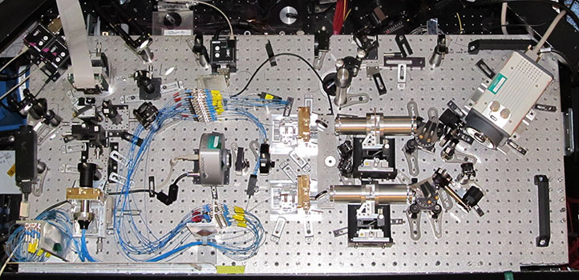
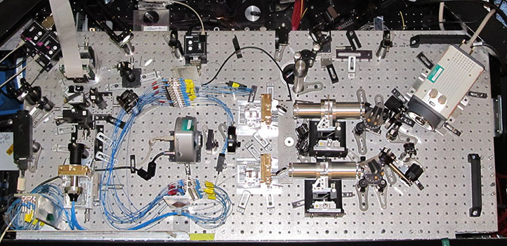

FIRST

The Fibered Imager foR a Single Telescope (FIRST) is being developed in collaboration with a team from Observatoire de Paris, led by Guy Perrin. Key team members include Elsa Huby (Universite de Liege), Sylvestre Lacour (Observatoire de Paris), Franck Marchis (SETI Institute), Gaspard Duchene (UC Berkeley), Takayuki Kotani (NAOJ), Olivier Lai (Gemini, NAOJ), Julien Woillez (ESO) and Lucien Gauchet (Observatoire de Paris).
FIRST is a visible light instrument which is based on a novel principle combining the techniques of aperture masking and spatial filtering of the wavefront thanks to single mode fibers (Perrin et al. 2006). The pupil of the telescope is divided into sub-apertures, each feeding one single mode fiber. These fibers only transmit the fundamental (quasi gaussian) mode of the fiber, thus cleaning the wavefront from the spatial phase perturbations (speckles) across the sub-aperture area. The fiber outputs are then organized on a linear non-redundant configuration in order to avoid the blurring of the fringes. The beams are cross-dispersed (spectral resolution of ~300) and recombined on a detector. Data post-processing (Lacour et al. 2007, Huby et al. 2012) then allows the estimation of closure phases (and ultimately complex visibilities) as a function of wavelength, allowing the spectral characterization of the observed target down to the diffraction limit of the telescope. First results have been obtained on binary stars (Huby et al., 2013). The angular resolution achieved at the Subaru telescope will allow the observation of asymmetries at the surface of supergiant stars with the largest apparent diameter (e.g. Betelgeuse).

 

(Top left) Schematic of the instrument principle for the recombination of 9 sub-apertures
(Top right) Picture of the injection and recombination parts of FIRST instrument as installed at the Subaru Telescope Nasmyth platform.
The two components are only linked via the optical fibers which transport the light from one to another
(Bottom) The instrument as mounted at the Lick Observatory.
| Key Technical Parameters | Value |
|---|---|
| Number of sub-apertures | 2 sets of 9 sub-apertures recombined independently |
| Spectral bandwidth | 600 - 850 nm |
| Spectral resolution | 300 |
| Angular resolution | λ/D = 18 mas at 700 nm |
| Field-of-view | ~6 λ/D ~ 100 mas |
The following publications offer insightful information about the FIRST instrument and achievements:
- The principle: Perrin, G. et. al., 2006, "High dynamic range imaging by pupil single-mode filtering and remapping", MNRAS, 373, 747P
- The data processing: Lacour, S., et. al., 2007, "High dynamic range imaging with a single-mode pupil remapping system: a self-calibration algorithm for redundant interferometric arrays" MNRAS, 374, 832L
- Laboratory results: Kotani, T., et. al., 2009, "Pupil remapping for high contrast astronomy: results from an optical testbed", Opt. Exp., 17, 1925
- First on-sky results from the 3 m Shane Telescope (Lick Observatory): Huby, E., et. al., 2012, "FIRST, a fibered aperture masking instrument. I. First on-sky test results", A&A, 541A, 55H
- Observations of the Capella binary system: Huby, E., 2013, "FIRST, a fibered aperture masking instrument. II. Spectroscopy of the Capella binary system at the diffraction limit", A&A, 560A, 113H
This is a list of associated press releases:
File ./050devmodules.web/020first.web/content.html last modified 10/08/2018 11:40:56 HST